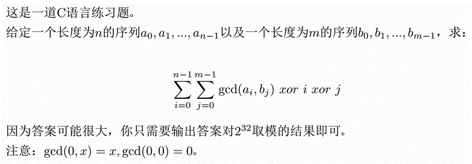

BZPRO
#4454. C Language Practice
内存限制：24 MiB
时间限制：20 Sec
提交
提交记录
讨论
题目描述

输入格式
第一行输入一个正整数T(T<=85)，表示测试数据的组数。
每组数据第一行包含两个正整数n,m(1<=n,m<=2000)，表示序列的长度。
第二行包含n个正整数，表示a[0],a[1],...,a[n-1](0<=a[i]<=1000000)。
第三行包含m个正整数，表示b[0],b[1],...,b[m-1](0<=b[i]<=1000000)。
输出格式
对于每组数据输出一行一个整数，即答案。
样例
样例输入
3
3 2
5 9 6
3 4
2 2
8 9
0 6
1 1
9
6
样例输出
6
22
3
数据范围与提示
注意：此题只有一个数据点。